Hay una página que recientemente fue hackeada y en donde hostearon una infraestructura. Ya volvió a la normalidad, pero la compañía quiere saber qué sistema implantaron.
Nos dan la página https://virelia-water.it.com/. Es una página estática muy simple, hecha para hostear alertas de OT. Tiene un navbar para la página de inicio, para una lista de archivos y para políticas de compliance. Algo interesante es que hay un solo reporte listado (June 2025), pero no está disponible:
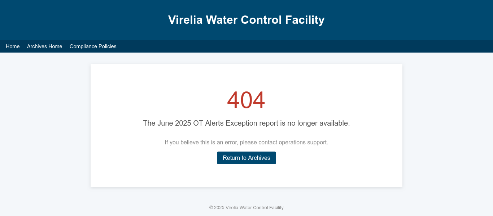
Lo primero que intenté fue buscar en Wayback Machine un snapshot de la página, pero no hay nada antes del día del CTF :( :
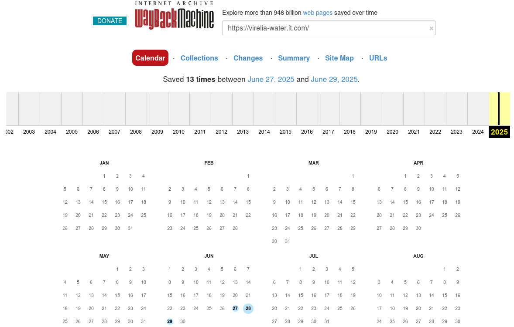
Jugando más con la página está esta página de 404:
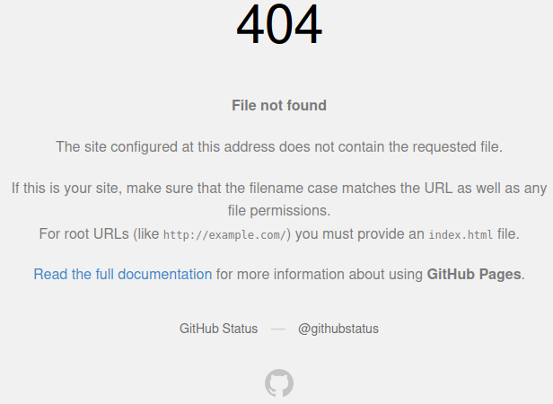
OK, usan GitHub Pages. Tal vez tengan un repo público de la página. Busqué “virelia water” en GitHub pero salió mucha basura. Busqué “virelia-water.it.com” y aparece en el tab de “Code” información importante:
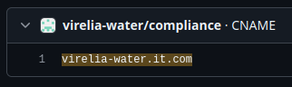
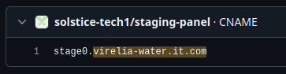
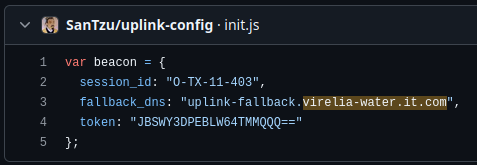
OK, cool. Está el repo virelia-water/compliance que seguro es el oficial, pero también hay menciones en solstice-tech/staging-panel y SanTzu/uplink-config. El primero tal vez sea una asociada a Virelia, pero el segundo sí está muy raro. Veamos su repo primero:
Solo hay un README (solo el título, sin comentarios, nada especial) y un archivo init.js que inicializa una variable beacon con tres atributos.
En repos como estos siempre es importante revisar el historial de commits; en este caso solo inicializó el README y luego puso el beacon.
OK, tal vez algo funcione pero no sé qué hacer con esto.
Viendo ahora el usuario SanTzu, es una clara imitación al militar Sun Tzu. Solo tiene este repo público e hizo su cuenta hace poquito. Seguro este es el hacker y ese repo tiene configuración para algún sistema que estaba implantando en varias etapas.
Lo importante de aquí fue revisar sus followers, porque noté que solstice-tech era uno de sus followers. Entonces seguro es parte de su equipo!
En este usuario encontramos dos repos:
Es otra página estática con una consola de un sistema ICS. Imitación o real, no sé, probablemente imitación. Vean que también llama al script de SanTzu:
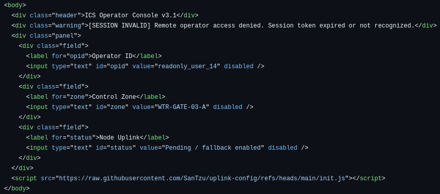
El otro archivo es un CNAME, que tiene injerencia en los records DNS de la página, si es que está aplicado. En presente dice stage0.virelia-water.it.com. De hecho si vamos a esa página la encontramos activa! Realmente los hackers siguen con el control, jaja.
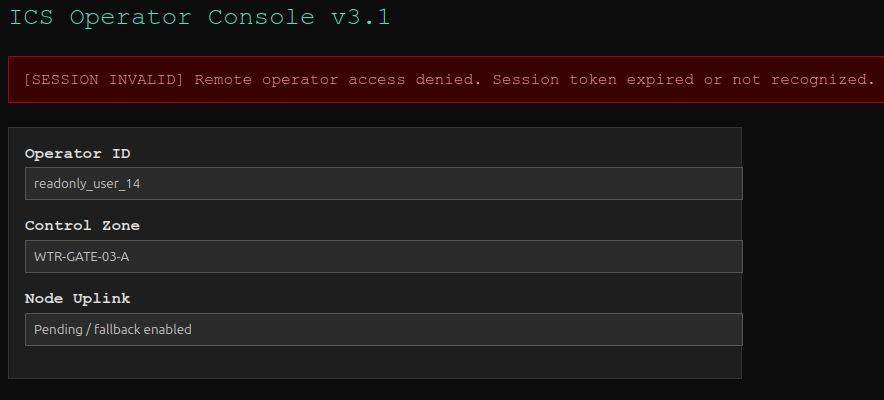
Viendo el historial de commits, sí que han habido cambios, sobre todo al CNAME. De hecho antes estaba en el dominio virielia-water.it.com. Tal vez haya sido phishing, tal vez un typo. Igual ya no existe y no está en Wayback.
Algo que también cambió fue la referencia a SanTzu, era otro usuario:
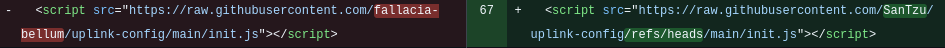
Aunque no me aparece en ningún lado. En español es como “falacia de guerra”. Ni idea, tal vez un red herring?
OK, luego de quedarme un tiempo con este repo, paso al otro:
Es una página que redirecciona a un portal de reseteo de contraseña? Pero el URI de destino es muy raro:
54484d7b5375357373737d.virelia-water.it.com
Resulta que si agarramos 54484d7b5375357373737d y lo pasamos de hex a texto:
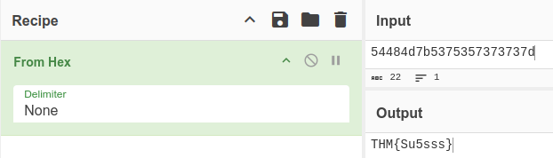
Muy bien!
Solo nos piden seguir investigándoles de gratis. Sigamos investigando porque dejé el repo a medias. Ese redirect URL no funciona ni está en Wayback (me debería rendir con Wayback). Viendo el historial, antes esta página era la principal. Seguro una campaña de phishing.
Iría al repo de virelia, pero como spoiler, ese es para el tercer flag y de hecho no lo había encontrado hasta después.
Revisé los GitHub Actions pero no había nada muy revelador en ningún repo, solo montar la página.
Tal vez revisemos más de la página. Primero revisé dónde se usó el certificado actual de la página con crt.sh:
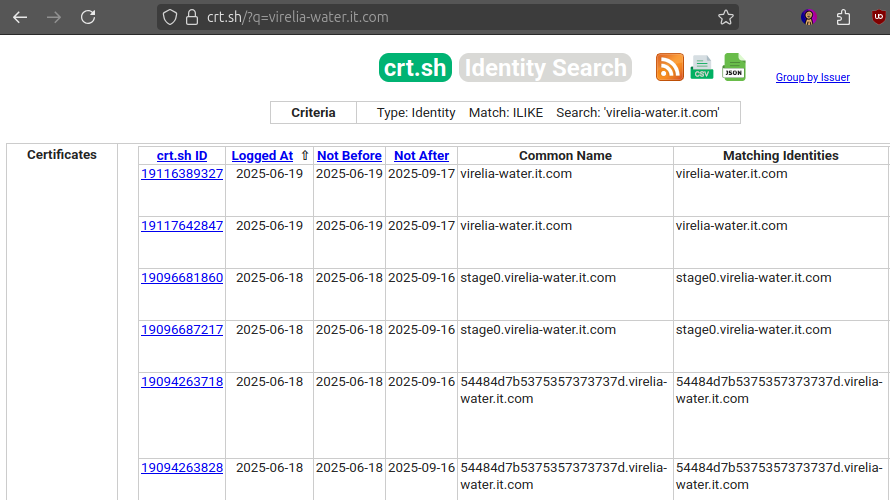
Como lo mismo que ya sabía.
Bueno, ChatGPT me dijo esto, pero qué tal si reviso los DNS records de la página? Lo puedo hacer con el comando dig:
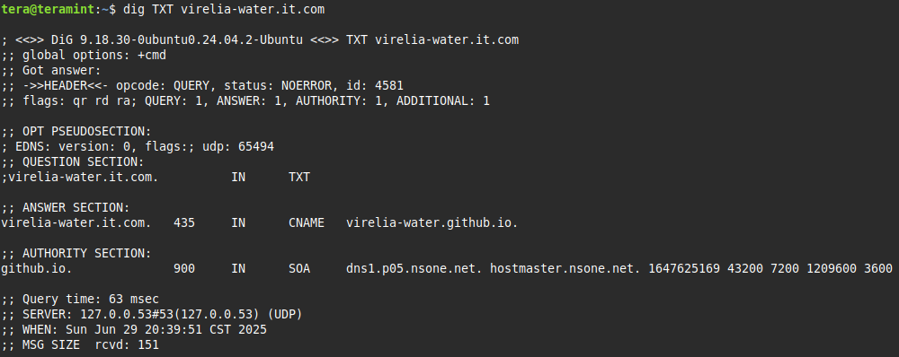
Yo creo que así sin argumentos solo es como un ping, lol. Por lo menos aquí hubiéramos sabido directamente que usaba GitHub.
Busquemos records tipo TXT. Son una manera de que un atacante pueda saber si ya tomó control de una página:
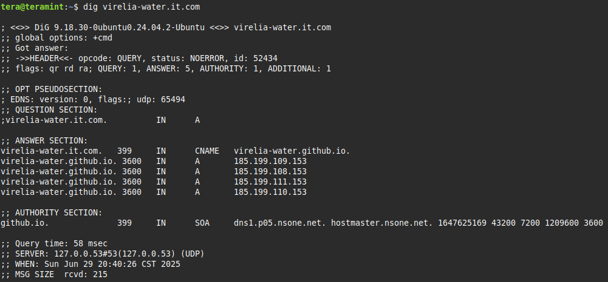
Bueno, nada mucho. Pero recordé que existen otros URLs, intentemos con esos?
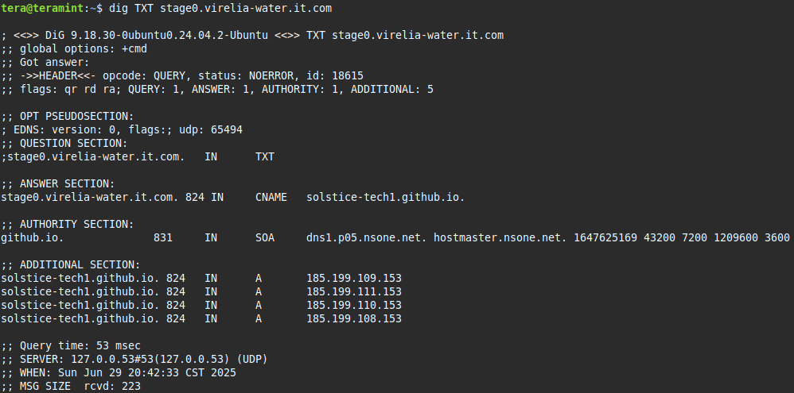
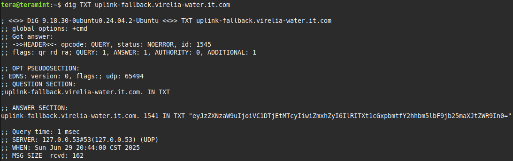
Bingo! Esto es base64 para:
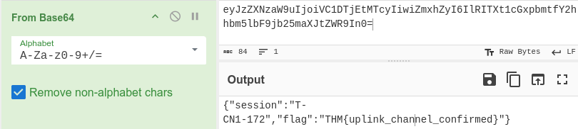
Con esto aprendí a ver DNS records de una página.
Ahora nos hablan de que hubo un mensaje extraño en los reportes y que por eso lo quitaron de la página (ese fue el de June 2025 que vimos). Sabemos que el repo oficial de Virelia existe:
Es básicamente la página web actual, hosteada públicamente en GitHub. Se supone que quitaron el reporte, entonces de una vez busquemos el historial. Ahí está el commit donde lo quitaron, veamos el contenido antes:
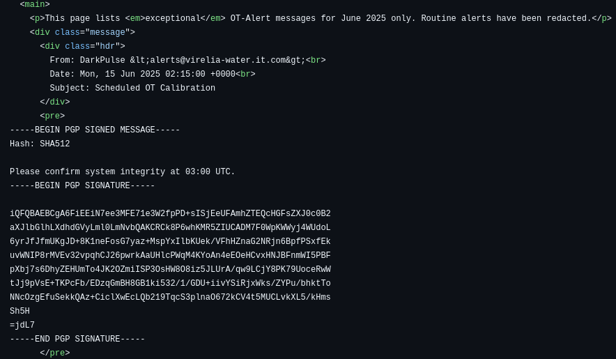
From: DarkPulse <alerts@virelia-water.it.com>
Date: Mon, 15 Jun 2025 02:15:00 +0000
Subject: Scheduled OT Calibration
-----BEGIN PGP SIGNED MESSAGE-----
Hash: SHA512
Please confirm system integrity at 03:00 UTC.
-----BEGIN PGP SIGNATURE-----
iQFQBAEBCgA6FiEEiN7ee3MFE71e3W2fpPD+sISjEeUFAmhZTEQcHGFsZXJ0c0B2
aXJlbGlhLXdhdGVyLml0LmNvbQAKCRCk8P6whKMR5ZIUCADM7F0WpKWWyj4WUdoL
6yrJfJfmUKgJD+8K1neFosG7yaz+MspYxIlbKUek/VFhHZnaG2NRjn6BpfPSxfEk
uvWNIP8rMVEv32vpqhCJ26pwrkAaUHlcPWqM4KYoAn4eEOeHCvxHNJBFnmWI5PBF
pXbj7s6DhyZEHUmTo4JK2OZmiISP3OsHW8O8iz5JLUrA/qw9LCjY8PK79UoceRwW
tJj9pVsE+TKPcFb/EDzqGmBH8GB1ki532/1/GDU+iivYSiRjxWks/ZYPu/bhktTo
NNcOzgEfuSekkQAz+CiclXwEcLQb219TqcS3plnaO672kCV4t5MUCLvkXL5/kHms
Sh5H
=jdL7
-----END PGP SIGNATURE-----
Cosas que destacan:
alerts@virelia-water.it.com, pero el nombre es DarkPulse. ¿Por qué? Busqué en Google y parece ser una compañía aparte. Busqué en GitHub y lo más cercano que encontré fue este usuario, cuyo repo tiene un link de Telegram y su nombre/número. Creo que esa es una persona real, jaja. Mejor hago otra cosa en lugar de meterme a ese Telegram.alerts@ y no parece que exista, jajaCon esa firma puedo ver más información:
gpg --verify msg.txt
gpg: Signature made Mon 23 Jun 2025 06:44:52 AM CST
gpg: using RSA key 88DEDE7B730513BD5EDD6D9FA4F0FEB084A311E5
gpg: issuer "alerts@virelia-water.it.com"
gpg: Can't check signature: No public key
Y con este key revisé si existe más información en un repositorio de Ubuntu:
gpg --keyserver hkps://keyserver.ubuntu.com --recv-keys 88DEDE7B730513BD5EDD6D9FA4F0FEB084A311E5
gpg: /home/tera/.gnupg/trustdb.gpg: trustdb created
gpg: key F8ED5BC28874364F: public key "Ghost (THM{h0pe_th1s_k3y_doesnt_le4d_t0_m3}) <solstice.tech.ops@gmail.com>" imported
gpg: Total number processed: 1
gpg: imported: 1
Wow! De hecho, ahora que está en mi keyring, puedo revisar info de ella:
gpg --list-keys
/home/tera/.gnupg/pubring.kbx
-----------------------------
pub rsa2048 2025-06-23 [SCEAR]
C9D52FA5AC3205AFED0CB242F8ED5BC28874364F
uid [ unknown] Ghost (THM{h0pe_th1s_k3y_doesnt_le4d_t0_m3}) <solstice.tech.ops@gmail.com>
uid [ unknown] DarkPulse (THM{h0pe_th1s_k3y_doesnt_le4d_t0_m3}) <alerts@virelia-water.it.com>
sub rsa2048 2025-06-23 [SEA] [expires: 2025-12-20]
Entonces alerts@virelia-water.it.com era un subkey de este usuario!